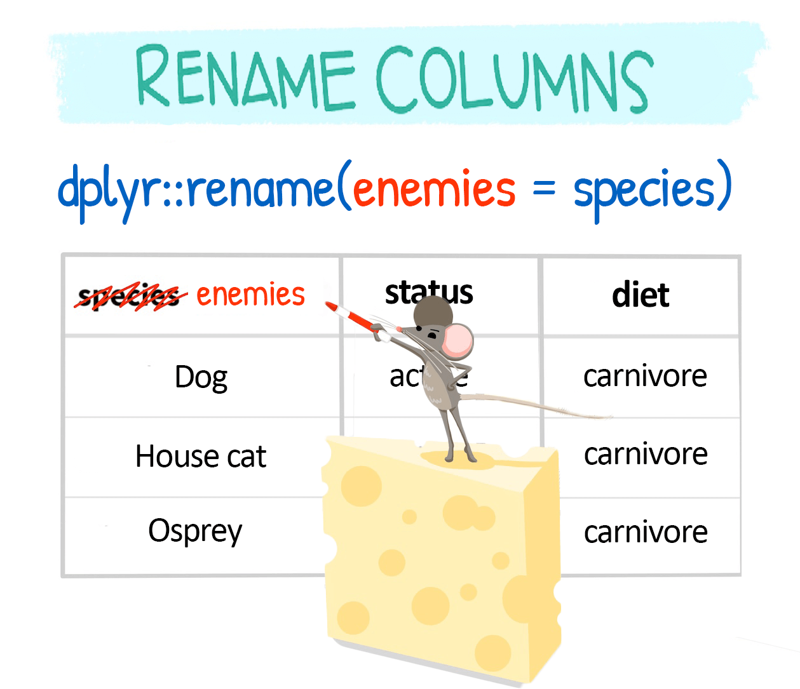

Advanced Data Managment
Center for Evaluation and Development (C4ED)
2024-08-13
Data Manipulation and Claning using dplyr() package
What is Tidyverse?
The
tidyverselibrary is a collection of several R packages that are designed to work together to make data manipulation and visualization tasks easier.a suite of packages that implement tidy methods for data importing, cleaning, and wrangling.
Contains a series of packages useful for data analysis that work together well.
All packages included in
tidyverseare automatically installed when installing thetidyversepackage:
- Then to work functions under tidyverse package we must always load the package into the workplace.
- Some packages under tidyverse are considered
core packagesand others calledfriend packages.
install.packages(“tidyverse”)
Core tidyverse
-
tibble, for tibbles, a modern re-imagining of data frames -
readr, for data import -
tidyr, for data tidying -
ggplot2, for data visualization -
dplyr, for data manipulation -
stringr, for strings -
forcats, for factors -
purrr, for functional programming
Friends for data import (beyond readr)
-
readxl, for xls and xlsx files -
haven, for SPSS, SAS, and Stata files -
jsonlite, for JSON -
xml2, for XML -
httr, for web APIs -
rvest, for web scraping -
DBI, for databases
Friends for data wrangling
-
lubridateandhms, for date/times
Friends for modeling
-
modelrandbroomfor model/tidy data
readr()
| Function | Function Reads |
|---|---|
read_csv() |
Comma separated values |
read_csv2() |
Semi-colon separate values |
read_delim() |
General delimited files |
read_fwf() |
Fixed width files |
read_log() |
Apache log files |
read_table() |
Space separated files |
read_tsv() |
Tab delimited values |
Tibbles
-
data.framesare the basic form of rectangular data in R (columns of variables, rows of observations) -
read_csv()reads the data into a tibble, a modern version of the data frame. - a tibble is a data frame
haven()
-
havenis not a core member of the tidyverse, so you need to load it.
Import data using haven()
-
read_sas(): SAS -
read_spss(): SPSS -
read_sav(): SPSS -
read_por(): SPSS -
read_stata(): Stata -
read_dta(): Stata
Export data
-
write_csv(): Comma separated values -
write_excel_csv(): CSV to open in Excel -
write_delim(): General delimited files -
write_sas(): SAS .sas7bdat files -
write_sav(): SPSS .sav files -
write_stata(): Stata .dta files
Intro to dplyr package
The
dplyrprovides a “grammar” (the verbs) for data manipulation and for operating on data frames in a tidy way.The key operator and the essential verbs are:
%>%: the “pipe” operator used to connect multiple verb actions together into a pipeline.
select(): return a subset of the columns of a data frame.
mutate(): add new variables/columns or transform existing variables.
filter(): extract a subset of rows from a data frame based on logical conditions.
arrange(): reorder rows of a data frame according to single or multiple variables.
summarise() / summarize(): reduce each group to a single row by calculating aggregate measures.
- We can have a look at the data and its structure by using the
glimpse()function from thedplyrpackage.
a) Manipulating variables:
select(): To extract variables
- Our first verb on the list is
selectwhich allows to keep or drop variables from your dataframe. Choosing your variables is the first step in cleaning your data.
-
select()is especially useful because it is quite flexible in its use to create new tables.
The COVID-19 dataset
Lets us use a COVID-19 which is serological survey conducted in Yaounde, Cameroon in late 2020.
The survey estimated how many people had been infected with COVID-19 in the region, by testing for IgG and IgM antibodies.
The full dataset can be obtained from Zenodo, and the paper can be viewed here.
There are some demographic, socio-economic and COVID-related variables.
The results of the IgG and IgM antibody tests are in the columns
igg_resultandigm_result.
-
dplyr::select()lets us pick which columns (variables) to keep or drop.
We can select a column by name:
Or we can select a column by position:
To select multiple variables, we separate them with commas:
- Select the 16th and 22nd columns in the
yaoundedata frame.
- For the next part of the tutorial, let’s create a smaller subset of the data, called
yao.
Selecting column ranges with :
The : operator selects a range of consecutive variables:
We can also specify a range with column numbers:
Excluding columns with !
The exclamation point negates a selection:
To drop a range of consecutive columns, we use, for example,!age:occupation:
To drop several non-consecutive columns, place them inside !c():
Helper functions for select()
dplyr has a number of helper functions to make selecting easier by using patterns from the column names. Let’s take a look at some of these.
starts_with() and ends_with()
These two helpers work exactly as their names suggest!
contains()
contains() helps select columns that contain a certain string:
everything()
Another helper function, everything(), matches all variables that have not yet been selected.
It is often useful for establishing the order of columns.
Say we wanted to bring the is_pregnant column to the start of the yao data frame, we could type out all the column names manually:
- But this would be painful for larger data frames, such as our original
yaoundedata frame. In such a case, we can useeverything():
- This helper can be combined with many others.
Change column names with rename()
dplyr::rename() is used to change column names:
Rename within select()
You can also rename columns while selecting them:
Rename within select()
- Delete columns you don’t need with
-(remember, if you delete multiple columns useselect(-c())so that-is applied to all of them).
- Define the chosen columns in a vector beforehand and then recall it with
!!.
- You can also select columns based on their data type using
select_if(). - The common data types to be called are:
is.character,is.double,is.factor,is.integer,is.logical,is.numeric.
- You can also mix various ways to call columns within
select():
Summary for Select() function
- There are five ways to select variables in
select(data, ...):
-
By position:
iris %>% select(1, 2, 4)oriris %>% select(1:2). -
By name:
iris %>% select(Sepal.Length, Sepal.Width, Petal.Length), oriris %>% select(Sepal.Length:Petal.Length). -
By function of name:
iris %>% select(starts_with("s")), oriris %>% select(ends_with("s")). You can also use helpers contains() and matches() for more flexibly matching. -
By type:
iris %>% select(where(is.numeric)),oriris %>% select(where(is.factor)). -
By any combination of the above using the Boolean operators !, &, and |:
-
iris %>% select(!where(is.factor)):selects all non-factor variables. -
iris %>% select(where(is.numeric) & starts_with("S")):selects all numeric variables that starts with ‘S’. -
iris %>% select(starts_with("P") | ends_with("h")):selects all variables that starts with ‘P’ or ends with ‘h’.
-
rename() : To rename variables
- If we want to change lowercase variables to uppercase, we can use
rename(), orrename_with().
- If we just want column names to be changed with a function, we can use
rename_withwhich is useful in this case since we can rename them withtolower.
- We could have achieved the same as above by selecting all columns and applying
tolower.
- If we wanted only some of them renamed and kept, we could have used
select_at()which specifies columns withvars().
-
Also the following are other important function
-
_all()if you want to apply the function to all columns -
_at()if you want to apply the function to specific columns (specify them withvars()) -
_if()if you want to apply the function to columns of a certain characteristic (e.g. data type) -
_with()if you want to apply the function to columns and include another function within it
-
These variants are quite flexible, and keep changing for individual functions (e.g. RStudio tells me now that
rename_with()has superseded previously usedrename_all(),rename_at(),rename_if()).
filter()
- Dropping abnormal data entries or keeping subsets of your data points is another essential aspect of data wrangling.
Let’s go !
- We use
filter()to keep rows that satisfy a set of conditions. - If we want to keep just the male records, we run:
- Note the use of the double equal sign
==rather than the single equal sign=. The==sign tests for equality, as demonstrated below:
- So the code
yao %>% filter(sex == "Male")will keep all rows where the equality testsex == "Male"evaluates toTRUE.
Key Point
The double equal sign, ==, tests for equality, while the single equals sign, =, is used for specifying values to arguments inside functions.
Relational operators
- The
==operator introduced above is an example of a “relational” operator, as it tests the relation between two values. Here is a list of some of these operators:
| Operator | is TRUE if |
| A < B | A is less than B |
| A <= B | A is less than or equal to B |
| A > B | A is greater than B |
| A >= B | A is greater than or equal to B |
| A == B | A is equal to B |
| A != B | A is not equal to B |
| A %in% B | A is an element of B |

Fig: AND and OR operators visualized.
Let’s see how to use these within filter():
Code
yao %>% filter(sex != "Male") ## keep rows where `sex` is not "Male"
yao %>% filter(age < 6) ## keep respondents under 6
yao %>% filter(age >= 70) ## keep respondents aged at least 70
### keep respondents whose highest education is "Primary" or "Secondary"
yao %>% filter(highest_education %in% c("Primary", "Secondary"))Combining conditions with & and |
- We can pass multiple conditions to a single
filter()statement separated by commas:
- When multiple conditions are separated by a comma, they are implicitly combined with an and (
&).
- It is best to replace the comma with
&to make this more explicit.
Side Note
Don’t confuse:
the “,” in listing several conditions in filter
filter(A,B)i.e. filter based on condition A and (&) condition Bthe “,” in lists
c(A,B)which is listing different components of the list (and has nothing to do with the&operator)
- If we want to combine conditions with an or, we use the vertical bar symbol,
|.
Negating conditions with !
To negate conditions, we wrap them in
!().Below, we drop respondents who are children (less than 18 years) or who weigh less than 30kg:
- The
!operator is also used to negate%in%since R does not have an operator for NOT in.
Key Point
It is easier to read
filter()statements as keep statements, to avoid confusion over whether we are filtering in or filtering out!So the code below would read: “keep respondents who are under 18 or who weigh less than 30kg”.
- And when we wrap conditions in
!(), we can then readfilter()statements as drop statements.
So the code below would read: “drop respondents who are under 18 or who weigh less than 30kg”.
NA values
- The relational operators introduced so far do not work with
NA.
Let’s make a data subset to illustrate this.
In
yao_mini, the last respondent has anNAfor theis_pregnantcolumn, because he is male.Trying to select this row using
== NAwill not work.
- This is because
NAis a non-existent value. So R cannot evaluate whether it is “equal to” or “not equal to” anything.
The special function is.na() is therefore necessary:
This function can be negated with !:
Side Note
For tibbles, RStudio will highlight NA values bright red to distinguish them from other values:

NASide Note
NA values can be identified but any other encoding such as "NA" or "NaN", which are encoded as strings, will be imperceptible to the functions (they are strings, like any others).
How to Use Mutate function in R
The dplyr library has the following functions that can be used to add additional variables to a data frame.
mutate()– adds new variables while retaining old variables to a data frame.transmute()– adds new variables and removes old ones from a data frame.mutate_all()– changes every variable in a data frame simultaneously.mutate_at()– changes certain variables by name.mutate_if()– alterations all variables that satisfy a specific criterion
mutate()
- A data frame’s existing variables are preserved when new variables are added using the
mutate()function. - The
mutate()basic syntax is as follows.
-
data: the fresh data frame where the fresh variables will be placed -
new_variable: the name of the new variable -
existing_variable: the current data frame variable that you want to modify in order to generate a new variable - Set the new column’s root sepal width to the sepal’s square root. variable width
transmute()
A data frame’s variables are added and removed via the transmute() method.
The code that follows demonstrates how to eliminate all of the existing variables and add two new variables to a dataset.
mutate_all()
The
mutate_all()function changes every variable in a data frame at once, enabling you to use thefuns()function to apply a certain function to every variable.The use of
mutate_all()to divide each column in a data frame by ten is demonstrated in the code below.divide 10 from each of the data frame’s variables.
- Remember that you can add more variables to the data frame by supplying a new name to be prefixed to the existing variable name.
Sepal.Length Sepal.Width Petal.Length Petal.Width Sepal.Length_mod
1 5.1 3.5 1.4 0.2 0.51
2 4.9 3.0 1.4 0.2 0.49
3 4.7 3.2 1.3 0.2 0.47
4 4.6 3.1 1.5 0.2 0.46
5 5.0 3.6 1.4 0.2 0.50
6 5.4 3.9 1.7 0.4 0.54
Sepal.Width_mod Petal.Length_mod Petal.Width_mod
1 0.35 0.14 0.02
2 0.30 0.14 0.02
3 0.32 0.13 0.02
4 0.31 0.15 0.02
5 0.36 0.14 0.02
6 0.39 0.17 0.04mutate_at()
Using names, the
mutate at()function changes particular variables.The use of
mutate_at()to divide two particular variables by 10 is demonstrated in the code below:
Sepal.Length Sepal.Width Petal.Length Petal.Width Sepal.Length_mod
1 5.1 3.5 1.4 0.2 0.51
2 4.9 3.0 1.4 0.2 0.49
3 4.7 3.2 1.3 0.2 0.47
4 4.6 3.1 1.5 0.2 0.46
5 5.0 3.6 1.4 0.2 0.50
6 5.4 3.9 1.7 0.4 0.54
Sepal.Width_mod
1 0.35
2 0.30
3 0.32
4 0.31
5 0.36
6 0.39mutate_if()
All variables that match a specific condition are modified by the
mutate_if()function.The
mutate_if()function can be used to change any variables of type factor to type character, as shown in the code below.
Sepal.Length Sepal.Width Petal.Length Petal.Width Species
"numeric" "numeric" "numeric" "numeric" "factor" - every factor variable can be converted to a character variable.
- The
mutate_if()method can be used to round any numeric variables to the nearest whole number using the following example code.
Sepal.Length Sepal.Width Petal.Length Petal.Width Species
1 5.1 3.5 1.4 0.2 setosa
2 4.9 3.0 1.4 0.2 setosa
3 4.7 3.2 1.3 0.2 setosa
4 4.6 3.1 1.5 0.2 setosa
5 5.0 3.6 1.4 0.2 setosa
6 5.4 3.9 1.7 0.4 setosa- any numeric variables should be rounded to the nearest decimal place.
Use across() inside mutate() function
# A tibble: 4 × 5
Sepal.Length Sepal.Width Petal.Length Petal.Width Species
<dbl> <dbl> <dbl> <dbl> <fct>
1 5 4 1.4 0.2 setosa
2 5 3 1.4 0.2 setosa
3 5 3 1.3 0.2 setosa
4 5 3 1.5 0.2 setosa Use across() inside mutate() function
# A tibble: 4 × 5
Sepal.Length Sepal.Width Petal.Length Petal.Width Species
<dbl> <dbl> <dbl> <dbl> <fct>
1 5 4 1.4 0.2 setosa
2 5 3 1.4 0.2 setosa
3 5 3 1.3 0.2 setosa
4 5 3 1.5 0.2 setosa Code
# A tibble: 4 × 5
Sepal.Length Sepal.Width Petal.Length Petal.Width Species
<dbl> <dbl> <dbl> <dbl> <fct>
1 5 4 1.4 0.2 setosa
2 5 3 1.4 0.2 setosa
3 5 3 1.3 0.2 setosa
4 5 3 1.5 0.2 setosa b) Manipulating cases
filter(): To extract cases
The function
filter()is used to filter the dataset to return a subset of all rows that meet one or more specific conditions.filter(dataframe, logical statement 1, logical statement 2, ...)

Filtering rows based on a numeric variable
# A tibble: 4 × 2
name sleep_total
<chr> <dbl>
1 Big brown bat 19.7
2 Thick-tailed opposum 19.4
3 Little brown bat 19.9
4 Giant armadillo 18.1- To select all animals with a total sleep time between 15 and 18 hours, use:
filter(sleep_total >= 16, sleep_total <= 18), but there is a slightly shorter way by using the between() function.
Filtering based on exact character variable matches
- If you want to select a specific group of animals for instance you can use the
==comparison operator:
# A tibble: 2 × 3
order name sleep_total
<chr> <chr> <dbl>
1 Didelphimorphia North American Opossum 18
2 Didelphimorphia Thick-tailed opposum 19.4- Similarly you can use the other operators:
-
filter(order != "Rodentia")will select everything except the Rodentia rows.
-
- If you want to select more than one animal you can use the
%in%operator.
Code
# A tibble: 3 × 3
order name sleep_total
<chr> <chr> <dbl>
1 Didelphimorphia North American Opossum 18
2 Didelphimorphia Thick-tailed opposum 19.4
3 Diprotodontia Phalanger 13.7- The
%in%operator used to deselect certain groups as well, using!%in%.
Filtering based on multiple conditions
- The above examples return rows based on a single condition, but the filter option also allows AND and OR style filters:
-
filter(condition1, condition2)will return rows where both conditions are met. -
filter(condition1, !condition2)will return all rows where condition one is true but condition 2 is not. -
filter(condition1 | condition2)will return rows where condition 1 and/or condition 2 is met. -
filter(xor(condition1, condition2)will return all rows where only one of the conditions is met, and not when both conditions are met.
- Multiple AND, OR and NOT conditions can be combined. The sample code will return all rows with a bodywt above 100 and either have a sleep_total above 15 or are not part of the Carnivora order.
Example with xor()
# A tibble: 5 × 3
name bodywt brainwt
<chr> <dbl> <dbl>
1 Cow 600 0.423
2 Horse 521 0.655
3 Donkey 187 0.419
4 Human 62 1.32
5 Brazilian tapir 208. 0.169Example with !:
- The sample code will select all rows where
brainwtis larger than 1, butbodywtdoes not exceed 100.
Filtering out empty rows
- To filter out empty rows, you negate the
is.na()function inside a filter: The sample code will remove any rows where the conservation is NA.
Filtering across multiple columns
How
dplyrpackage filter across multiple columns in one go?filter_all(): will filter all columnsfilter_if(): filter columns based on a function.filter_at(): requires specify columns inside avars()argument for which the filtering will be done.In many cases you will need a
.operator within the condition which refers to the values we are looking at.
filter_all()
-
Used to wrap the condition in any_vars().
- For example to find the string “Ca” across all columns,
The same can be done for numerical values: This code will retain any rows that has any value below 0.1:
-
any_vars()statement is equivalent to OR, and -
all_vars()is an equivalent for AND.
The below code will retain any rows where all values are above 1.
filter_if()
to find out all data rows where we NA in the first few columns use
filter_all(any_vars(is.na(.)))Using
filter_if()I can filter on character variables.
filter_at()
One of the more powerful functions is
filter_at(): it does not filter all columns, nor does it need you to specify the type of column, you can just select columns to which the change should happen via thevars()argument.Use
all_vars()if all columns need to return TRUE, orany_vars()in case just one variable needs to return TRUE.Example: refer to columns by their name:
- Example: using another select option:
Sort rows with arrange
Re-order rows by a particular column, by default in ascending order
Use desc() for descending order.
arrange(data, variable1, desc(variable2), ...)
Example: 1. Let us use the following code to create a scrambled version of the airquality dataset
Sort rows with arrange()
Example: 2. Now let us arrange the data frame back into chronological order, sorting by Month then Day
Ozone Solar.R Wind Temp Month Day
1 41 190 7.4 67 5 1
2 36 118 8.0 72 5 2
3 12 149 12.6 74 5 3
4 18 313 11.5 62 5 4
5 NA NA 14.3 56 5 5
6 28 NA 14.9 66 5 6.comment[Try : arrange(air_mess, Day, Month) and see the difference.]
Pipe perator (%>%)
Pipes in R look like
%>%and strings together commands to be performed sequentiallyThe pipe passes the data frame output that results from the function right before the pipe to input it as the first argument of the function right after the pipe.
This nesting is not a natural way to think about a sequence of operations.
The
%>%operator allows you to string operations in a left-to-right fashion.
Advantages of Pipe oprator
- Pipes used to reduce multiple steps, that can be hard to keep track of.
- less redundant code
- Easy to read and write because functions are executed in order
- Difficult to read if too many functions are nested
- Look at the three syntax
group_by() and summarise()
The
dplyrverbs become especially powerful when they are are combined using the pipe operator%>%.The following
dplyrfunctions allow us to split our data frame into groups on which we can perform operations individuallygroup_by(): group data frame by a factor for downstream operations (usually summarise)summarise(): summarise values in a data frame or in groups within the data frame with aggregation functions (e.g.min(),max(),mean(), etc…)
dplyr - Split-Apply-Combine
The group_by function is key to the Split-Apply-Combine strategy

The summarize() function
The
summarize()function is used in the R program to summarize the data frame into just one value or vector.This summarization is done through grouping observations by using categorical values at first, using the
group_by()function.The
summarize()function offers the summary that is based on the action done on grouped or ungrouped data.
Summarize grouped data
The operations that can be performed on grouped data are
average,factor,count,mean, etc.Example: we are interested in the mean temperature and standard deviation within each month of the airquality dataset
Summarize ungrouped data
- We can also summarize ungrouped data. This can be done by using three functions.
summarize_all()summarize_at()summazrize_if()
1. summarize_all()
- This function summarizes all the columns of data based on the action which is to be performed.
summarize_all(action)- example The code
airquality %>% summarize_all(mean)will show the mean of all columns.
2. summarize_at()
- It performs the action on the specific column and generates the summary based on that action.
Code
summarize_at(vector_of_columns, action)
- `vector_of_columns`: The list of column names or character vector of column names.
- The `airquality %>% group_by(Month) %>% summarize_at(c("Wind","Temp"),mean)` will show the mean of the `'Wind'` and `'Temp'` observations in the result, grouping with `Month`.
airquality %>% group_by(Month) %>%
summarize_at(c("Wind","Temp"),mean)3. summarize_if()
- In this function, we specify a condition and the summary will be generated if the condition is satisfied.

Recoding Variables
- use
recode()inside amutate()statement.
Example of Recoding
Code
# A tibble: 6 × 4
Diet Gender Weight_start Weight_change
<chr> <chr> <int> <int>
1 A Male 241 -2
2 B m 113 17
3 B Other 134 4
4 A F 188 5
5 B Female 161 10
6 B M 249 12- Say we have some data about samples in a diet study but this needs lots of recoding.
dplyr can help!
Using Excel to find all of the different ways gender has been coded, could be hectic!
In dplyr you can use the recode function (need mutate here too!):
recode()
Or you can use case_when()
The case_when() function of dplyr can help us to do this as well.
- Note that automatically values not reassigned explicitly by
case_when()will beNAunless otherwise specified.
# A tibble: 12 × 4
Diet Gender Weight_start Weight_change
<chr> <chr> <int> <int>
1 A <NA> 241 -2
2 B <NA> 113 17
3 B <NA> 134 4
4 A <NA> 188 5
5 B <NA> 161 10
6 B Male 249 12
7 A <NA> 169 -3
8 B <NA> 222 -10
9 B <NA> 211 8
10 A <NA> 245 9
11 B <NA> 115 -9
12 B <NA> 179 -1Use of case_when() without automatic NA
- Here we use the original values of
Genderto replace all values ofGenderthat do not meet the condition== "M".
# A tibble: 12 × 4
Diet Gender Weight_start Weight_change
<chr> <chr> <int> <int>
1 A Male 241 -2
2 B m 113 17
3 B Other 134 4
4 A F 188 5
5 B Female 161 10
6 B Male 249 12
7 A f 169 -3
8 B O 222 -10
9 B Man 211 8
10 A f 245 9
11 B F 115 -9
12 B O 179 -1More complicated case_when()
Code
# A tibble: 6 × 4
Diet Gender Weight_start Weight_change
<chr> <chr> <int> <int>
1 A Male 241 -2
2 B Male 113 17
3 B Other 134 4
4 A Female 188 5
5 B Female 161 10
6 B Male 249 12Another reason for case_when()
case_when can do very sophisticated comparisons
Code
# A tibble: 6 × 4
Diet Gender Weight_start Weight_change
<chr> <chr> <int> <int>
1 A Male 241 -2
2 B m 113 17
3 B Other 134 4
4 A F 188 5
5 B Female 161 10
6 B M 249 12Creating new discrete column with two levels
- The
ifelse()statement can be used to turn a numeric column into a discrete one.
# A tibble: 6 × 5
Diet Gender Weight_start Weight_change Temp_cat
<chr> <chr> <int> <int> <chr>
1 A Male 241 -2 decreased
2 B m 113 17 Increased
3 B Other 134 4 Increased
4 A F 188 5 Increased
5 B Female 161 10 Increased
6 B M 249 12 IncreasedWorking with strings by stringr package
The stringr package:
- Modifying or finding part or all of a character string
- We will not cover
greporgsub- base R functions- are used on forums for answers
- Almost all functions start with
str_*
str_detect()
str_detect, andstr_replacesearch for matches to argument pattern within each element of a character vector (not data frame or tibble!).str_detect- returnsTRUEifpatternis foundstr_replace- replacespatternwithreplacement
- The
stringargument specifies what to check
- The
patternargument specifies what to check for
str_replace()
- The
replacementargument specifies what to replace the pattern with
filter and stringr functions
# A tibble: 4 × 4
Diet Gender Weight_start Weight_change
<chr> <chr> <int> <int>
1 A Male 241 -2
2 B m 113 17
3 B Other 134 4
4 A F 188 5# A tibble: 3 × 4
Diet Gender Weight_start Weight_change
<chr> <chr> <int> <int>
1 A Male 241 -2
2 B M 249 12
3 B Man 211 8
case_when() improved with stringr
Code
# A tibble: 6 × 4
Diet Gender Weight_start Weight_change
<chr> <chr> <int> <int>
1 A Male 241 -2
2 B Male 113 17
3 B Other 134 4
4 A Female 188 5
5 B Female 161 10
6 B Male 249 12
case_when() improved with stringr
^indicates the beginning of a character string$indicates the end
Code
# A tibble: 3 × 2
Gender n
<chr> <int>
1 Female 5
2 Male 4
3 Other 3Data mergining
- The 4 mutating join verbs:
left_join()right_join()inner_join()full_join()
The 2 binding join verbs:
bind_rows()bind_cols()
- The 2 filtering join verbs:
semi_join()anti_join()
- The 3 set operations:
intersect()union()setdiff()
All the joins have this basic syntax: ****_join(x, y, by = NULL, suffix = c(“.x”, “.y”)
x =the first (left) tabley =the second (right) tableby =what columns to match on. If you leave this blank, it will match on all columns with the same names in the two tables.suffix =if columns have the same name in the two tables, but you aren’t joining by them, they get a suffix to make them unambiguous.This defaults to “.x” and “.y”, but you can change it to something more meaningful.
- First, we’ll create two small data tables.
-
subjecthas id, sex and age for subjects 1-5. - Age and sex are missing for subject 3.
-
exphas subject id and the score from an experiment. Some subjects are missing, some completed twice, and some are not in the subject table.
left_join()
- A
left_joinkeeps all the data from the first (left) table and joins anything that matches from the second (right) table. - If the right table has more than one match for a row in the right table, there will be more than one row in the joined table (see ids 4 and 5).
right_join()
- A
right_joinkeeps all the data from the second (right) table and joins anything that matches from the first (left) table.
- This table has the same information as
left_join(exp, subject, by = "id"), but the columns are in a different order (left table, then right table).
inner_join()
- An
inner_joinreturns all the rows that have a match in the other table.
full_join()
- A
full_joinlets you join up rows in two tables while keeping all of the information from both tables. - If a row doesn’t have a match in the other table, the other table’s column values are set to
NA.
semi_join()
- A
semi_joinreturns all rows from the left table where there are matching values in the right table, keeping just columns from the left table.
- Unlike an inner join, a semi join will never duplicate the rows in the left table if there is more than one maching row in the right table.
Order matters in a semi join.
anti_join()
- A
anti_join()return all rows from the left table where there are not matching values in the right table, keeping just columns from the left table.
bind_rows()
- You can combine the rows of two tables with
bind_rows. - Here we’ll add subject data for subjects 6-9 and bind that to the original subject table.
- The columns just have to have the same names, they don’t have to be in the same order.
Any columns that differ between the two tables will just have
NAvalues for entries from the other table.If a row is duplicated between the two tables (like id 5 below), the row will also be duplicated in the resulting table.
If your tables have the exact same columns, you can use
union()(see below) to avoid duplicates.
bind_cols()
You can merge two tables with the same number of rows using bind_cols.
This is only useful if the two tables have their rows in the exact same order.
The only advantage over a left join is when the tables don’t have any IDs to join by and you have to rely solely on their order.
intersect()
-
intersect()returns all rows in two tables that match exactly. -
union()returns all the rows from both tables, removing duplicate rows.
setdiff()
-
setdiffreturns rows that are in the first table, but not in the second table.
::: columns ::: {.column width=“50%”}
- setdiff()

Converting data from wide to long or long to wide
Reshaping data using tidyr package
- Following are the four important functions to tidy (clean) the data:
| Function | Objective | Arguments |
|---|---|---|
gather() |
Transform the data from wide to long | (data, key, value, na.rm = FALSE) |
spread() |
Transform the data from long to wide | (data, key, value) |
separate() |
Split one variables into two | (data, col, into, sep= ” “, remove = TRUE) |
unit() |
Unit two variables into one | (data, col, conc ,sep= ” “, remove = TRUE) |
gather()
- The objectives of the
gather()function is to transform the data from wide to long.
Syntax
Arguments:
data: The data frame used to reshape the dataset
key: Name of the new column created
value: Select the columns used to fill the key column
na.rm: Remove missing values. FALSE by default
Example
Below, we can visualize the concept of reshaping wide to long.
We want to create a single column named growth, filled by the rows of the quarter variables.
Code
library(tidyr)
data <- data.frame( # Create a dataset
Treatment = c("A", "B", "C"),
q1_2021 = c(0.03, 0.05, 0.01),
q2_2021 = c(0.05, 0.07, 0.02),
q3_2021 = c(0.04, 0.05, 0.01),
q4_2021 = c(0.03, 0.02, 0.04),
q1_2022 = c(0.06, 0.07, 0.04),
q2_2022 = c(0.08, 0.07, 0.08),
q3_2022 = c(0.10, 0.08, 0.08),
q4_2022 = c(0.09, 0.09, 0.10))
data Treatment q1_2021 q2_2021 q3_2021 q4_2021 q1_2022 q2_2022 q3_2022 q4_2022
1 A 0.03 0.05 0.04 0.03 0.06 0.08 0.10 0.09
2 B 0.05 0.07 0.05 0.02 0.07 0.07 0.08 0.09
3 C 0.01 0.02 0.01 0.04 0.04 0.08 0.08 0.10Reshape the data
- In the
gather()function, we create two new variable quarter and growth because our original dataset has one group variable: i.e. treatment and the key-value pairs.
Treatment quarter growth
1 A q1_2021 0.03
2 B q1_2021 0.05
3 C q1_2021 0.01
4 A q2_2021 0.05
5 B q2_2021 0.07
6 C q2_2021 0.02
7 A q3_2021 0.04
8 B q3_2021 0.05
9 C q3_2021 0.01
10 A q4_2021 0.03
11 B q4_2021 0.02
12 C q4_2021 0.04spread()
- The
spread()function does the opposite of gather.
Syntax
arguments:
data: The data frame used to reshape the dataset
key: Column to reshape long to wide
value: Rows used to fill the new column
Example
- We can reshape the long dataset back to data with
spread()
Reshape the data
separate()
The
separate()function splits a column into two according to a separator.This function is helpful in some situations where the variable is a date.
Our analysis can require focussing on month and year and we want to separate the column into two new variables.
Syntax
arguments:
- data: The data frame used to reshape the dataset
- col: The column to split
- into: The name of the new variables
- sep: Indicates the symbol used that separates the variable, i.e.: “-”, “_”, “&”
- remove: Remove the old column. By default sets to TRUE.
Example
- We can split the quarter from the year in the tidier dataset by applying the
separate()function.
Code
Treatment Qrt year growth
1 A q1 2021 0.03
2 B q1 2021 0.05
3 C q1 2021 0.01
4 A q2 2021 0.05
5 B q2 2021 0.07
6 C q2 2021 0.02
7 A q3 2021 0.04
8 B q3 2021 0.05
9 C q3 2021 0.01
10 A q4 2021 0.03
11 B q4 2021 0.02
12 C q4 2021 0.04unite()
- The
unite()function concanates two columns into one.
Syntax
arguments: - data: The data frame used to reshape the dataset - col: Name of the new column - conc: Name of the columns to concatenate - sep: Indicates the symbol used that unites the variable, i.e: “-”, “_”, “&” - remove: Remove the old columns. By default, sets to TRUE —
Example
In the above example, we separated quarter from year.
What if we want to merge them.
We use the following code:
Dealing with Missing Data
Missing data types
- One of the most important aspects of data cleaning is missing values.
Types of “missing” data:
-
NA- general missing data -
NaN- stands for “Not a Number”, happens when you do 0/0. -
Infand-Inf- Infinity, happens when you divide a positive number (or negative number) by 0.
Finding Missing data
-
is.na- looks forNANandNA -
is.nan- looks forNAN -
is.infinite- looks for Inf or -Inf
[1] TRUE TRUE FALSE[1] TRUE FALSE FALSE[1] FALSE FALSE TRUEUseful checking functions
-
anywill beTRUEif ANY are true-
any(is.na(x))- do we have anyNA’s inx?
-
naniar
- Sometimes you need to look at lots of data though… the
naniarpackage is a good option. - The
pct_complete()function shows the percentage that is complete for a given data object, (vector or data frame).
naniar plots
- The
gg_miss_var()function creates a nice plot about the number of missing values for each variable, (need a data frame).
Missing Data Issues
Recall that mathematical operations with NA often result in NAs.
filter() and missing data
filter() and missing data
To remove rows with NA values for a variable use drop_na()
A function from the
tidyrpackage. (Need a data frame to start!)Don’t do this unless you have thought about if dropping
NAvalues makes sense based on knowing what these values mean in your data.
Change a value to be NA
- The
na_if()function ofdplyrcan be helpful for this. Let’s say we think that all 0 values should beNA.
Summary
is.na(),any(is.na()),count(), and functions fromnaniarlikegg_miss_var()can help determine if we haveNAvaluesfilter()automatically removesNAvalues - can’t confirm or deny if condition is met (need| is.na()to keep them)drop_na()can help you removeNAvalues from a variable or an entire data frameNAvalues can change your calculation resultsthink about what
NAvalues represent - don’t drop them if you shouldn’t
Data leaning
Cleaning data is one of the most essential parts in data analysis.
Data cleaning is the process of converting messy data into reliable data that can be analyzed in R.
-
Data cleaning improves data quality and your productivity in R.
Format ugly data frame column names in R
Delete all blank rows in R
Remove duplicate rows in R
Converting numeric to date format
Checking consistency by using
tably()function
clean_names()
This function is used to change and clean up names of columns in data frames.
It can be used to ensure consistency.
You can choose to change all names to lower cases, separated by underscores, variations on internal capital letters between words, title case or other styles.
It can also be used to remove parts of names and any special characters, including replacing % symbols with the word percent.
The most recommended variable names in R is one word, lower case, without special characters.
clean_names()function will be used available in janitor R package to clean column names.
remove_empty() & remove_constant()
- Suppose if you want to remove rows and/or columns of if contain completely empty, then you can use
remove_empty()function available in janitor R package.
-
remove_empty()removes both empty rows and empty columns.
sepal_length sepal_width petal_length petal_width species
1 5.1 3.5 1.4 0.2 setosa
2 4.9 3.0 1.4 0.2 setosa
3 4.7 3.2 1.3 0.2 setosa
4 4.6 3.1 1.5 0.2 setosa
5 5.0 3.6 1.4 0.2 setosa
6 5.4 3.9 1.7 0.4 setosa- Lets add two constant columns to the dataset and see how we can remove all this junk with janitor.
get_dupes()
This function retrieves any
duplicatesin the dataset so that they can be examined during data clean-up operations.One trick is determining if a duplicate is indeed a duplicate.
The function returns a data frame which includes a
dupe_countcolumn containing the number of duplicates of that value.
- We can also get duplicate values by col names
sepal_length sepal_width dupe_count petal_length petal_width species
1 5.8 2.7 4 4.1 1.0 versicolor
2 5.8 2.7 4 3.9 1.2 versicolor
3 5.8 2.7 4 5.1 1.9 virginica
4 5.8 2.7 4 5.1 1.9 virginica
5 5.1 3.8 3 1.5 0.3 setosa
6 5.1 3.8 3 1.9 0.4 setosa- We can also use
distinct()function available indplyr R packageto remove the duplicate rows.
If we want to remove duplicate rows with respect to a specific variable, we can use distinct() function again. For example, we remove duplicate rows with respect to petal_length.
Code
sepal_length sepal_width petal_length petal_width species
1 5.1 3.5 1.4 0.2 setosa
2 4.7 3.2 1.3 0.2 setosa
3 4.6 3.1 1.5 0.2 setosa
4 5.4 3.9 1.7 0.4 setosa
5 4.8 3.4 1.6 0.2 setosa
6 4.3 3.0 1.1 0.1 setosatabyl()
This function is used to produce frequency tables and contingency tables, i.e. counts of each category or combination of categories of data.
Unlike the base R
table()function,tabyl()returns a data frame which makes results easier to work with.The code below creates a data frame showing the number of rows of data (n) for each location in the dataset.
- Also returned is a percent column, showing the percentage of rows containing data for that location.
Explore missing values
convert_to_date()
A modern Excel always tries to automate things, and I hate it!
For instance you write a number into a cell and it sometimes immediately converts it into date. Then you try to have a date in a cell, and it returns a number.
Moreover, Excel also has some strange date encoding systems, which can be confused with a normal numeric columns.
Luckily, our dirty dataset has a “date” word in the name of a column “hire_date”, otherwise we wouldn’t know that it is a date:
excel_numeric_to_date()
Ever load data from Excel and see a value like
42223where a date should be?This function converts those serial numbers to class Date, with options for different Excel date encoding systems, preserving fractions of a date as time (in which case the returned value is of class POSIXlt), and specifying a time zone.
Convert a mix of date and datetime formats to date
Building on
excel_numeric_to_date(), the new functionsconvert_to_date()andconvert_to_datetime()are more robust to a mix of inputs.Handy when reading many spreadsheets that should have the same column formats, but don’t.
For instance, here a vector with a date and an Excel datetime sees both values successfully converted to Date class:
Dates
- Before dates in a dataset are loaded into R, typically they are stored as a column of character (string) values.
- However, dates are inherently numeric and we lose this information when they are stored as strings.
In R, we want to convert our string dates to R class
Date, which preserves the dates’ numeric values and allows us to take advantage of the many date-related functions in R.Once converted to class Date, the numeric value for the date represents the number of days since January 1, 1970 (1970-01-01).
as.Date()
- Base R provides
as.Date()to convert strings to dates, but it can be intimidating and unwieldy to use, particularly if your dates are not stored in one of 2 default formats (see?strptimefor more about date formats).
- Once our dates are class Date, we can perform date arithmetic.
[1] "Date"[1] 365Time difference of 1 days[1] "1971-01-03"- We just need something easier to use to convert strings of various formats to class Date!
Package lubridate
tidyverseprovides the amusingly named packagelubridateto help R users convert their string dates to R Date format more easily as well as functions to process those dates.The Date conversion functions in lubridate accept a wide variety of date formats, removing the need for us to remember all of those format specifications.
Instead, just take the letters y, m, and d and place them in the order of the year, month and day, respectively, as they are stored in the date column. That ordering produces the name of the function to convert that column to
Date(e.g.ymd(),mdy(),dmy()).
Using lubridate
- We’ll first load a dataset with various date formats to demonstrate the flexibility of lubridate functions.
# A tibble: 3 × 5
fmt1 fmt2 fmt3 fmt4 decision_time
<chr> <chr> <date> <dbl> <chr>
1 01/15/89 December 8, 2015 2015-02-27 20090101 Approved 10-10-15 07:15:55
2 02/13/92 January 22, 2012 2016-11-15 20080819 Denied 09-27-11 14:57:23
3 03/15/84 March 3, 2010 2017-12-25 20071011 Approved 04-24-15 02:03:03Currently, the first 4 columns are stored as
chr,chr,date, andint.The third column is actually read in as
Datebyread_csv()because of its particular formatting signals a date toread_csv().The first pair of columns use the order month-day-year, while the second pair of columns use year-month-day.
So, we want
mdy()andymd().
Code
f1 f2 f3 f4
1 1989-01-15 2015-12-08 2015-02-27 2009-01-01
2 1992-02-13 2012-01-22 2016-11-15 2008-08-19
3 1984-03-15 2010-03-03 2017-12-25 2007-10-11Date-time variables
If your date column additionally contains time information (i.e. is date-time), you can add one or more of h, m, and s to y, m, and d to form the function name to convert the string to class
POSIXct.Class
POSIXctstores date-time variables as a number representing the number of seconds since the beginning of 1970.The fifth column of our
datesdataset,decision_time, is a date-time variable.(It also contains an “Approved/Denied” string at the beginning that the
lubridate()function will ignore!).Specifically, the date-time is recorded as month, day, year, hour, minute, second, so we want
mdy_hms():
[1] "POSIXct" "POSIXt" - The ‘time zone’ standard
UTC(Coordinated Universal Time) is used as the default zone. Use the argument,tz=to assign a zone. - To see a list of valid time zone specifications, run
OlsonNames().
Extracting information from Date variables
- lubridate provides several functions to extract specific information from Date variables including:
-
day(): day of the month -
wday(): weekday -
yday(): day of the year -
month(): month of the year -
year(): year
-
- Some examples of extracting information from Date variables.
- Some more date information extraction:
Extracting information from POSIXct variables
-
lubridate also has functions to extract time information from POSIXct date-time variables.
hour()minute()second()
Two sets of functions for date-time arithmetic
If you need to add or subtract time to your date variables, lubridate provides 2 sets of functions.
One set gives “intuitive” results, and will ignore conventions like leap year.
These include
seconds(),minutes(),hours(),days(),weeks(),years().The other set will adhere to those conventions, and are named by adding d to the names of the previous functions,
dseconds(),dminutes(),dhours(),ddays(),dweeks(),dyears().
Easy data cleaning with the janitor package
Clean column names
- add some points about
- count
- tably
- percent for making quick graphs
https://www.r-bloggers.com/2024/05/easy-data-cleaning-with-the-janitor-package/